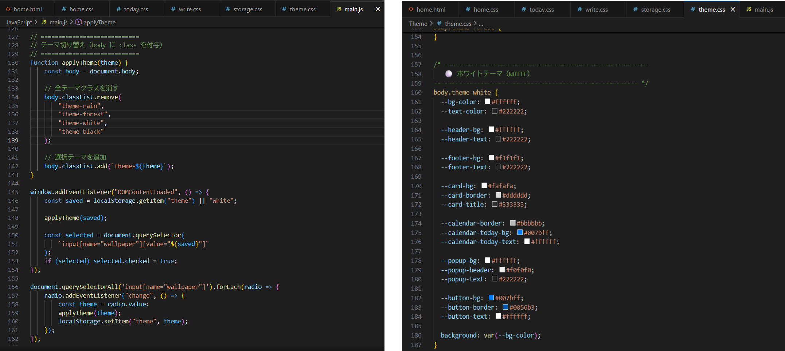
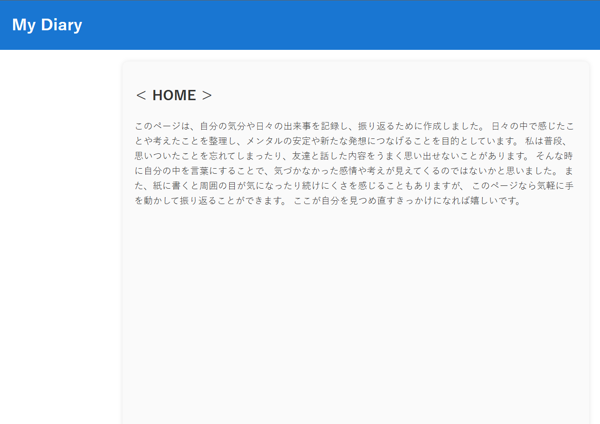
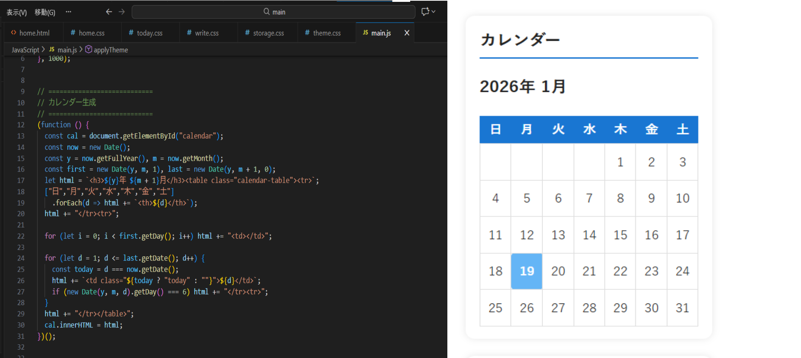
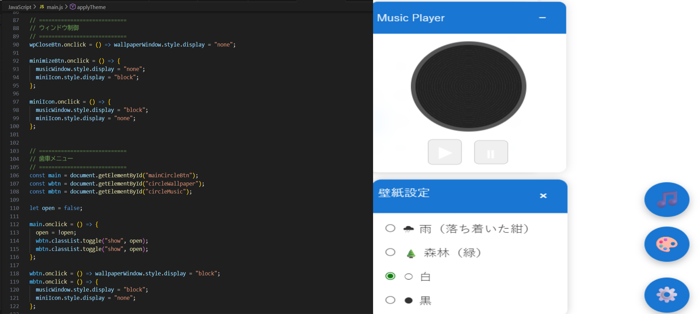

本作品は、日々の行動や感情を言語化し、自己理解を深めることを目的とした内省・振り返り用のWebアプリです。
ユーザーはその日の出来事、感じたこと、学びを入力し、時系列で振り返ることができます。
また、おまけとして壁紙のようにテーマ変更も可能です。
以下の動画はこのアプリに関しての、成果内容と全体的にどう使えるのかの説明動画です。
Visual Studio Code
HTML・CSS・JavaScript
約２か月
１人
この制作物は、自身が困ったときやああいったことを言えていたらよかったかも、
このときこうしていたらよかったが多いため、それらを振り返りこの時はこうだった
などを簡単に見返せるようなものが欲しくて作成しました。
自分の使用したことのないJavaScriptなどを学びや成長のため。今までに調べてこなかった内容を中心に
使用できるページを増やし、普通の日記帳とは違う目新しさで、壁紙変更などの設定要素を設けてみようとしたことです。
JavaScriptからテーマ用のcssを共有する作業が苦戦した。どのようにやるのかがわからずに、遅れをとってしまった部分の一つ。


こちらは、カレンダーをリアルタイムの日付にすることだった。こちらもわからず、調べつつ自分が一から制作し、完成に向かって取り組んだ。

最後に、歯車ボタンとそれぞれのボタンを押した後のウィンドウ。JavaScript①につながることで、壁紙変更のためにラジオボタンを押すと変更できるようにした....ものの、最後まで完成ができなかった。
また、BGMを自分の好きに変更できるような工夫もしようとしたものの、こちらもできずに終わった。これらの主な原因は自身で検索し、調べ反映させるまでに仕組みを理解できなかった点にあると考える。

壁紙に色に関して、シンプルなデザインにしたかったため、
白と黒の二色と落ち着いた気持ちで書くために紺と緑を選択しました。
反省として、知りたいことやわからないことはどんな手段を
用いても即座に調べたり、アドバイスをもらいに行くことや、
行動ができずにその場で立ち止まったままなら、課題や物事が前に進まないため
一度自分で限界まで試してみて、どうしても無理なら頼ることが大切だと思いました。
学んだことは、自分視点だけでなく他人視点での、見やすさ意識も大事で、
自分の見えている部分が必ず正しいというわけではないということを学びました。
【2026/2/10】 壁紙のデザイン変更および、反映しました。
また、ページ移行後も壁紙設定を保持し続けることができるようになっています。